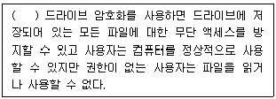
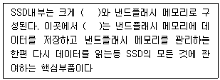
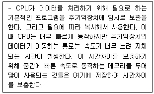
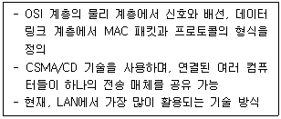

PC정비사-1급 (2020-05-24 기출문제)
1과목: PC운영체제
1. Windows 7 Professional의 네트워크 및 공유센터에서 확인 및 설정 가능한 구성요소가 아닌것은?
- 새 연결 또는 네트워크 설정
- 로컬 영역 연결
- 홈 그룹 및 공유 옵션 선택
- 네트워크 활동이 있는 프로세스
(정답률: 78%)

2. 컴퓨터 시스템의 성능 극대화 측면에서 운영체제의 목적이 아닌 것은?
- 처리능력의 증대
- 편의성의 극대화
- 신뢰도 향상
- 사용 가용도의 증대
(정답률: 40%)
3. Windows 7 Professional의 레지스트리 구조에 속하지 않은 것은?
- HKEY_LOCAL_CONFIG
- HKEY_CURRENT_CONFIG
- HKEY_CLASSES_ROOT
- HKEY_USERS
(정답률: 40%)
4. 리눅스에서 'test'라고 하는 파일 내에 'ICQA'라는 단어를 찾기 위한 명령은?
- grep test ICQA
- grep ICQA test
- find -name ICQA test
- find -name test ICQA
(정답률: 51%)
5. Windows 7 Professional 의 휴지통에 대한 설명으로 잘못된 것은?
- 휴지통을 비우면 사용 가능한 하드디스크의 용량이 늘어난다.
- 휴지통의 최대크기는 사용자가 설정할 수 있다.
- 휴지통의 최소크기는 사용자가 설정할 수 있다.
- USB메모리에 저장된 파일을 삭제할 때는 휴지통에 저장되지 않는다.
(정답률: 60%)
6. Windows 7 Professional의 관리 도구에 대한 설명으로 잘못된 것은?
- 데이터 원본(ODBC) - COM(구성 요소 개체 모델) 구성 요소를 구성하고 관리한다.
- Windows 메모리 진단 - 컴퓨터의 메모리가 제대로 작동하는지 확인한다.
- 컴퓨터 관리 - 통합된 단일 데스크톱 도구를 사용하여 로컬 또는 원격 컴퓨터를 관리한다. 컴퓨터 관리를 사용하면 시스템 이벤트 모니터링, 하드 디스크 구성, 시스템 성능 관리 등의 많은 작업을 수행할 수 있다
- 이벤트 뷰어 - 이벤트 로그에 기록되어 있는 프로그램 시작 또는 중지, 보안 오류 등 중요한 이벤트에 대한 정보를 본다.
(정답률: 57%)
7. Windows 7 Professional에 기본적으로 포함되어 있으며 스파이웨어 및 그 밖의 원치 않는 소프트웨어로부터 컴퓨터를 보호할 수 있게 해주는 소프트웨어의 이름은?
- avast
- BITDEFENDER
- ICF(Internet Connection Firewall)
- Windows Defender
(정답률: 81%)
8. 다음 중 Windows 7의 명령 프롬프트에서 제어판을 실행하기 위한 명령어로 알맞은것은?
- control.msc
- control.exe
- setup.msc
- setup.exe
(정답률: 51%)
9. 다음 설명 중 ( )안에 들어갈 제어판 도구로 알맞은 것은?

- BitLocker
- Dorker
- CryptoMix
- CryptLocker
(정답률: 65%)
10. 다음 중 프로세스 스케줄링의 종류가 아닌 것은?
- FIFO(First In First Out)
- Round Robin
- Shortest Job First
- Semaphore
(정답률: 63%)
11. Windows 7 Professional을 사용하는 PC의 특정 디스크에서 임의의 파일을 찾아보려고 할 때 사용되는 방법이 잘못된 것은?
- 바탕화면에서 [Windows]+[F3]키를 누른다.
- 시작메뉴에서 [프로그램 및 파일 검색]을 클릭한다.
- 내 컴퓨터에서 오른쪽 마우스 버튼을 누른 후 [S]키를 누른다.
- Windows 탐색기에서 [Ctrl]+[E]키를 누른다.
(정답률: 57%)
12. Linux에서 모든 파일의 목록과 자세한 사항을 내림차순으로 정렬하기 위한 명령은?
- ls –alc
- ls –alk
- ls –alr
- ls -alu
(정답률: 41%)
13. 일정기간이나 특정 기능을 제한하여 사용하다가, 정식으로 사용하려면 그에 해당하는 비용을 지불해야 하는 소프트웨어는?
- 그래픽 소프트웨어
- 유틸리티
- 셰어웨어
- 백신
(정답률: 73%)
14. 다음 중 Windows 7 Professional의 보조프로그램이 아닌것은?
- Windows Movie Maker
- 수학 식 입력판
- 캡쳐 도구
- 프로젝터에 연결
(정답률: 43%)
15. 입력되는 자료들을 일정 기간 동안 또는 일정량의 자료를 모아 한번에 처리하는 운영체제 방식은?
- 온라인처리방식(On-Line Processing System)
- 다중프로그래밍체제(Multiprogramming System)
- 일괄처리체제(Batch Processing System)
- 시분할체제(Time Sharing System)
(정답률: 78%)
2과목: PC주변기기
16. 다음은 무엇을 설명한 것인가?

- 레귤레이터
- 컨트롤러
- 캐패시터
- 트림
(정답률: 61%)
17. INTEL의 모바일용 CPU에 채택된 기술로서 배터리의 사용시간을 연장하는 기술은?
- 스피드 스텝
- 3D나우
- 넷버스트 아키텍쳐
- 파워나우
(정답률: 42%)
18. 시스템을 네트워크에 물리적으로 연결하는 확장카드나 기타 장치를 뜻하는 것은?
- 프로토콜
- 에뮬레이터
- 유틸리티
- 네트워크 어댑터
(정답률: 73%)
19. CPU(중앙처리장치)의 구성요소가 아닌 것은?
- 레지스터(Register)
- 제어 유닛(Control Unit)
- ALU(Arithmatic and Logic Unit)
- 버스(Bus)
(정답률: 56%)
20. 프린터의 전송 모드에 대한 규약이 아닌 것은?
- EPP
- ECP
- LPT
- SPP
(정답률: 43%)
21. 다음 중 성격이 다른 디바이스는?
- USB 3.0
- SCSI
- PCI
- IEEE 1394
(정답률: 40%)
22. 두 개의 비트맵 장면이 있을 때, 앞에 있는 장면이 투명하게 보이면서 뒤에 있는 장면과 함께 섞여 보이도록 하는 그래픽 기능을 뜻하는 것은?
- 알파 블렌딩(Alpha-Blending)
- 안개 효과(Fogging)
- 안티 에일리어싱(Anti-Aliasing)
- 바이-리니어 필터링(Bi-linear Filtering)
(정답률: 46%)
23. 다음 중 RS232C 포트에 해당 하는 것은?
- PS/2 커넥터
- USB 커넥터
- COM 커넥터
- LPT 커넥터
(정답률: 41%)
24. 다음은 무엇에 대한 설명인가?

- 롬(ROM)
- 플래시 롬(Flash ROM)
- 캐시 메모리(Cache Memory)
- 마스크 롬(Mask ROM)
(정답률: 73%)
25. 음향신호 합성을 위한 방법은 PCM(Pulse Code Modulation)과 FM(Frequency Modulation) 방식이 있다. 이에 대한 설명으로 잘못된 것은?
- PCM : 아날로그-디지털 변환기와 디지털-아날로그 변환기를 이용하여 소리를 녹음, 재생하는 방법이다.
- PCM : 샘플링 주파수가 높을수록 디스크의 저장 공간이 줄어드는 장점이 있다.
- FM : 물체의 진동에 의한 파형을 미리 기억시켜 놓은 후, 이 파형을 직접 조작해 새로운 소리를 만들어 내는 방식이다.
- FM : 주파수 변조 방식의 합성 회로를 이용하여 악보의 음표에 해당하는 악기음을 재생한다.
(정답률: 58%)
26. 하드디스크의 용량을 구하는 방법은?
- 헤드 수 X 실린더 수 X 섹터 수 X 섹터당 바이트 수
- 헤드 수 X 실린더 수 X 섹터당 바이트 수
- 헤드 수 X 클러스터 수 X 섹터 수 X 섹터당 바이트 수
- 실린더 수 X 섹터 수 X 섹터당 바이트 수
(정답률: 59%)
27. RAID란 데이터를 중복 저장함으로서 만약에 발생되는 데이터의 손실을 최소화하기 위한 오류제어 시스템이다. 두 개의 HDD를 사용하여 Mirroring을 하는 RAID의 형식은?
- RAID 1
- RAID 2
- RAID 3
- RAID 4
(정답률: 63%)
28. 프로세서의 속도를 높이는 데에는 한계가 있다. 그 때문에 보다 고속의 프로세서를 제조하는 데에는 기술적 난관에 부딪히게 된다. 그 때문에 인텔과 AMD에서는 각기 독자적인 강화 명령어셋을 프로세서 내부에 포함시켜서 동작 클럭을 그대로 유지하면서도 성능의 강화를 꾀하게 된다. 여기에 해당하지 않는 것은?
- MMX
- SSE
- 3D Now
- OpenGL
(정답률: 47%)
29. 하드웨어의 상태를 점검하고 환경을 저장하는 역할을 하는 것은?
- I/O 칩셋
- PCI 칩셋
- 메인보드 칩셋
- BIOS
(정답률: 65%)
30. 안테나 개수에 맞춰 수신감도를 극대화시키는 기술로 동시에 많은 장치에 데이터를 전달할 수 있다. 속도 저하를 없애 연결된 복수의 기기가 동시에 최대 속도로 와이파이를 사용할 수 있는 기술은 무엇이라고 하는가?
- DLNA
- Samba
- QoS
- MU-MIMO
(정답률: 47%)
3과목: 디지털 논리회로
31. POST 과정의 순서가 바르게 나열된 것은?
- 시스템 버스 테스트 - 그래픽 카드 테스트 - 메모리 테스트 - 키보드 테스트 - 디스크 테스트 - P&P 기능 동작 - CMOS 내용확인 - DMI 기능 동작
- DMI 기능 동작 - 그래픽 카드 테스트 - 메모리 테스트 - 키보드 테스트 - 디스크 테스트 - P&P 기능 동작 - CMOS 내용확인 - 시스템 버스 테스트
- 시스템 버스 테스트 - P&P 기능 동작 - 메모리 테스트 - 키보드 테스트 - 디스크 테스트 - 그래픽 카드 테스트 - CMOS 내용확인 - DMI 기능 동작
- 시스템 버스 테스트 - CMOS 내용확인 - 그래픽 카드 테스트 - 메모리 테스트 - 키보드 테스트 - P&P 기능 동작 - 디스크 테스트 - DMI 기능 동작
(정답률: 51%)
32. PC 주변기기를 설치할 때 환경 설정을 자동으로 할 수 있게 하는 기능은?
- Plug & Play
- Multi Tasking
- 제어판
- 사용자 인터페이스
(정답률: 70%)
33. PC가 부팅할 때, 키보드의 Num Lock, Caps Lock, Scroll Lock의 LED가 한번 깜박거린다. 이것이 의미하는 것은?
- 키보드에 전원이 공급되었음을 의미한다.
- 키보드 제어기와 CPU와 정보를 교환하며 자체 검사하는 과정을 의미한다.
- 키보드가 부팅과정에서 오류가 발생되었다는 것을 의미한다.
- 키보드 드라이버를 설치하여야 한다.
(정답률: 62%)
34. 부팅 중에 나타날 수 있는 에러 메시지의 종류가 아닌 것은?
- CMOS Checksum Error
- Keyboard Error
- HDD Controller Error
- System Software Abnormal
(정답률: 56%)
35. Over Clocking에 대한 일반적인 설명 중 잘못된 것은?
- CPU의 클럭 설정은 점퍼 비율 딥스위치를 조정하거나 BIOS SETUP에서 설정할 수 있다.
- 오버클럭킹을 사용하게 되면 CPU의 온도가 오버클럭킹을 하기전보다 높아지므로 주의한다.
- 오버클럭킹에는 외부 클럭을 올리는 방법과 클럭 배수를 올리는 방법이 있다.
- 메인보드에서 지원하는 클럭 수 보다 높게 오버클럭킹이 가능하다.
(정답률: 61%)
4과목: PC유지보수
36. Windows에서 보호된 시스템 파일을 검색하는 명령어로 올바른 것은?
- sfc /scannow
- scanreg /restore
- sys A:C:
- convert C:/FS:NTFS/X
(정답률: 57%)
37. Windows를 사용하는 도중 속도가 점점 느려지는 현상이 발생하였다. 문제의 원인으로 잘못된 것은?
- 레지스트리가 점점 커지고 불필요한 내용이 쌓이기 때문이다.
- Windows에서 사용하는 DLL과 드라이버 파일이 많아지기 때문이다.
- 하드디스크의 단편화가 심해지기 때문이다.
- 주기억 장치(RAM)의 단편화가 심해지기 때문이다.
(정답률: 55%)
38. 모니터의 영상이 가끔씩 흔들리는 현상이 발생하는 경우, 문제의 해결 방법으로 옳지 않은 것은?
- 모니터의 모아레 현상 제거 기능을 작동시켜 본다.
- 모니터의 주파수와 해상도를 변경해 본다.
- 모니터의 위치를 바꿔본다.
- 모니터의 밝기나 눈부심 정도를 조절해 본다.
(정답률: 44%)
39. 컴퓨터 부팅과정 중 메모리를 테스트 하는 과정에 대한 설명으로 옳은 것은?
- 장착된 메모리가 정확하게 동작을 하는지 확인하는 과정이다.
- 메모리의 용량이 필요이상으로 많이 장착되어 있기 때문이다.
- 컴퓨터 운영 중 작동상의 에러이다.
- Windows 제어판에서 가상 메모리 크기를 실제 메모리의 2배로 설정하면 메모리 테스트과정이 생략된다.
(정답률: 69%)
40. 바이러스 침투를 막기 위해 부트섹터와 파티션 테이블에 기록이 되지 않도록 하는 Anti Virus Protection이 포함되어있는 Award BIOS의 메뉴로 올바른 것은?
- Standard CMOS Setup
- BIOS Features Setup
- Chipset Features Setup
- Power Management Setup
(정답률: 59%)
41. 회로시험기의 레인지를 DCV에 놓고 파워서플라이를 측정하려고 한다. 사용 용도로 가장 올바른 것은?
- 입력 전압이 올바른지 확인할 때 사용
- 출력 전압이 올바른지 확인할 때 사용
- 연결선의 단선 여부를 확인할 때 사용
- 출력 전류 값이 올바른지 확인할 때 사용
(정답률: 52%)
42. 두 개 이상의 하드디스크에 있는 할당되지 않은 공간영역을 하나의 논리 볼륨으로 결합하여 사용하고 하나의 디스크 용량이 가득 차면 다음 디스크로 이어서 기록하여 낭비하는 부분이 없이 효율적으로 사용할 수 있는 것으로 올바른 것은?
- 단순볼륨
- 스팬볼륨
- 스트라이프볼륨
- 미러볼륨
(정답률: 39%)
43. 컴퓨터 조립에 대한 설명 중 잘못된 것은?
- 메모리 설치 시 듀얼 채널을 구성하려면 2개의 메모리를 사용하여야 한다.
- 전면패널 커넥터 HDD LED, POWER LED, 리셋 SW, 전원 SW는 극성이 없으므로 전극에 상관없이 연결한다.
- CPU 쿨러를 고정한 뒤에는 CPU 소켓 근처에서 쿨러 단자를 찾아 CPU 쿨러 커넥터를 꽃아준다.
- SATA 방식의 하드디스크는 마스터와 슬레이브를 구분하는 점퍼를 설정할 필요가 없다.
(정답률: 64%)
44. 시스템에서 소음이 과도하게 발생할 경우 해결책으로 올바르지 않은 것은?
- 전원 공급장치 및 CPU에 부착되어 있는 쿨러를 청소해 준다.
- 메인보드 및 각종 주변장치를 고정시키는 나사를 견고하게 조여준다.
- 컴퓨터 내부의 먼지를 제거한다.
- 팬 컨트롤러를 이용해 쿨러의 RPM을 높인다.
(정답률: 77%)
45. 프로그램을 안전하게 제거하는 방법으로 잘못된 것은?
- 제어판의 프로그램 추가/제거 기능을 이용한다.
- 프로그램에서 제공하는 Uninstall 기능을 이용한다.
- 탐색기에서 프로그램 폴더를 찾아 삭제한다.
- 클린 스윕(Clean Sweep)과 같은 설치/제거 관리 프로그램을 이용한다.
(정답률: 71%)
46. 네트워크를 통해 보안서비스를 제공하는 기술과 가장 거리가 먼 것은?
- SSL
- TLS
- IPSec
- SD Card
(정답률: 78%)
47. 네트워크상에서 두 케이블 사이에 설치하여 한쪽의 신호를 증폭하여 다른 쪽으로 보내주는 역할을 하는 장비는?
- 라우터(Router)
- 리피터(Repeater)
- 브릿지(Bridge)
- 트랜시버(Transceiver)
(정답률: 54%)
48. 인터넷을 이용한 전자 상거래에서 멀티미디어 콘텐츠의 지적 소유권 보호를 위해 콘텐츠에 사용자 정보를 숨겨 저작권 및 소유권을 보호하는 방법으로 올바른 것은?
- Watermarking
- Encryption
- PGP(Pretty Good Privacy)
- SHTTP(Secure-HTTP)
(정답률: 50%)
49. 클래스 C에 해당되는 IP 주소는?
- 107.140.23.4
- 178.140.232.5
- 217.232.147.3
- 247.231.142.3
(정답률: 50%)
50. 네트워크에서 지정된 호스트에 도달할 때까지 통과하는 경로의 정보와 각 경로에서의 지연 시간을 추적하는 명령어는?
- ping
- tracert
- ipconfig
- icmp
(정답률: 46%)
5과목: PC네트워크
51. 정보 보안의 3대 요소라고 볼 수 없는 것은?
- 기밀성
- 무결성
- 가용성
- 호환성
(정답률: 61%)
52. 목표 서버와 공격시간대를 정해서 집중적으로 공격함으로써 결국 웹서비스를 제공하지 못할 정도로 시스템이 느려지거나 다운되도록 공격하는 방법은?
- DoS
- IDS
- LAN
- VPN
(정답률: 73%)
53. 다음 중 통신 프로토콜의 기본 요소가 아닌 것은?
- 의미(Semantics)
- 타이밍(Timing)
- 네이밍(Naming)
- 구문(Syntax)
(정답률: 45%)
54. 다음 중 설명으로 알맞은 것은?

- PPP
- 토큰링
- FDDI
- 이더넷
(정답률: 69%)
55. 프로토콜의 기능 중 상위 계층으로 부터 받은 데이터에 자신의 제어정보를 추가하는 기능으로 올바른 것은?
- 캡슐화(Encapsulation)
- 조립(Assembly)
- 동기화(Synchronization)
- 다중화(Multiplexing)
(정답률: 51%)
56. 2진수 (11011)2을 10진수로 변환하면 얼마인가?
- 16
- 27
- 39
- 54
(정답률: 61%)
57. 다음 중 가중치부호이면서 자보수 부호인 것은?
- 2-5진 부호
- 그레이 부호
- 5421부호
- 2421부호
(정답률: 45%)
58. 그레이 코드 0101을 2진 코드로 변환한 것은?
- 0110
- 1010
- 1011
- 0100
(정답률: 25%)
59. 2진수 체계에서 2의 보수와 1의 보수 간의 관계는?
- 2의 보수 = 1의 보수 + 1
- 2의 보수 = 1의 보수 + 2
- 2의 보수 = 1의 보수 - 1
- 2의 보수 = 1의 보수 - 2
(정답률: 45%)
60. 오류검출 부호가 아닌 것은?
- 해밍 부호
- 패리티 부호
- 2-5진 부호
- 3초과 부호
(정답률: 44%)
설명: Windows 7 Professional의 네트워크 및 공유센터에서는 새 연결 또는 네트워크 설정, 로컬 영역 연결, 홈 그룹 및 공유 옵션 선택과 같은 구성요소를 확인하고 설정할 수 있습니다. 그러나 "네트워크 활동이 있는 프로세스"는 구성요소가 아니며, 이는 현재 네트워크 활동을 수행하는 프로그램 또는 프로세스를 나타냅니다. 예를 들어, 웹 브라우저나 파일 다운로드 프로그램 등이 해당됩니다.